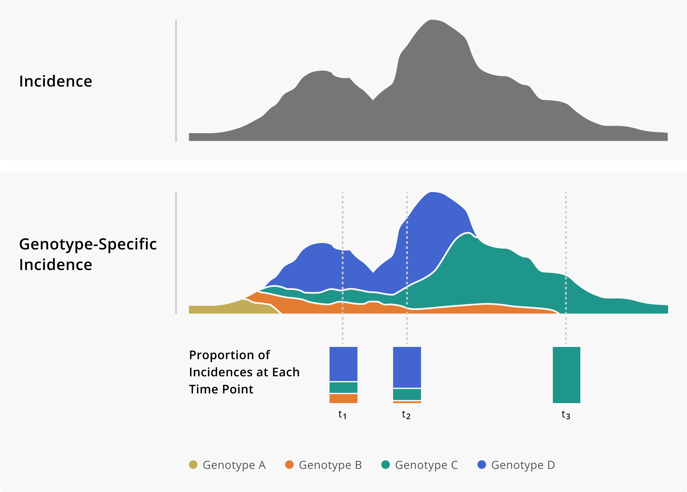
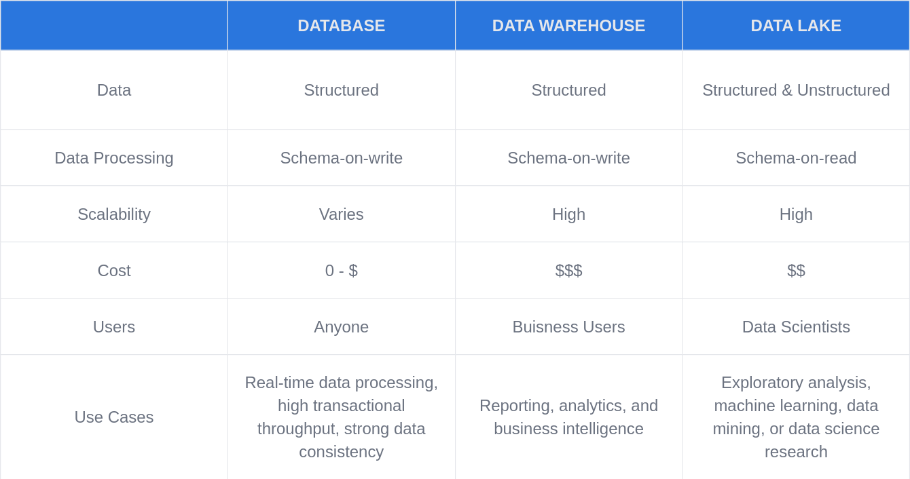
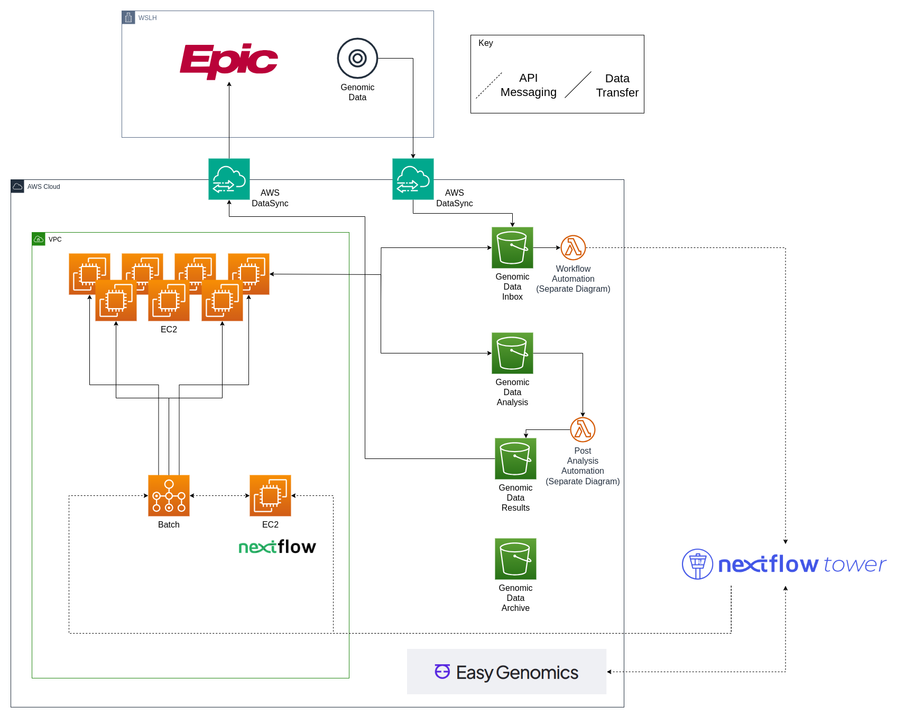
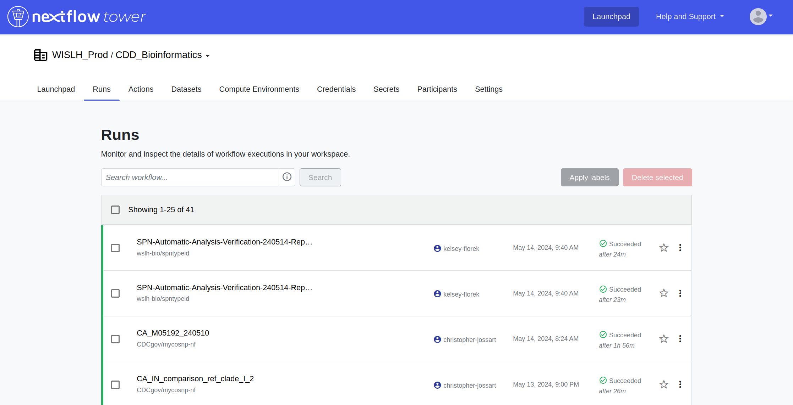
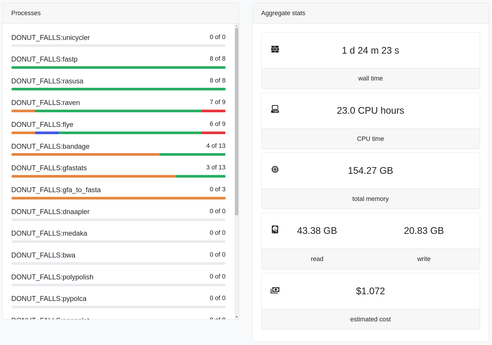
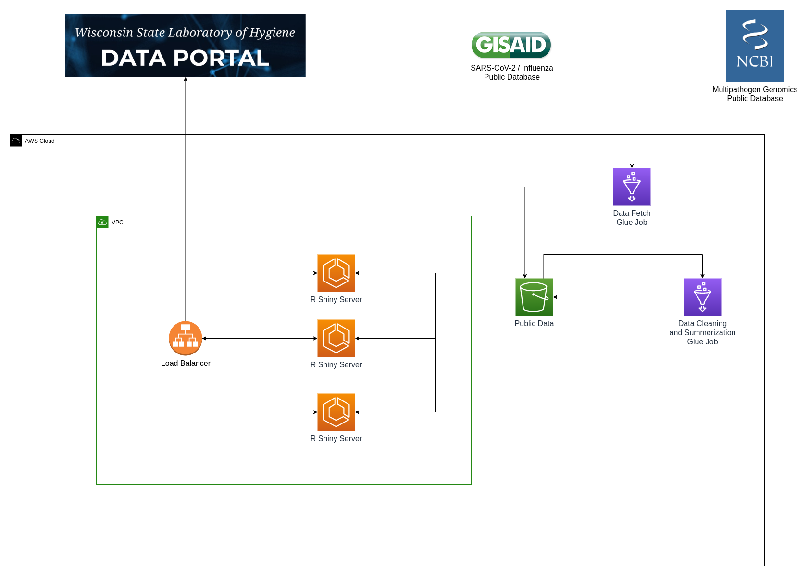
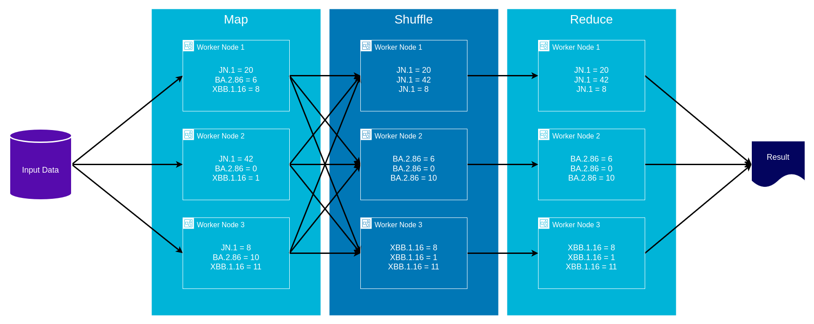
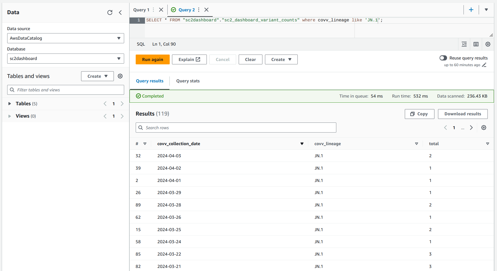
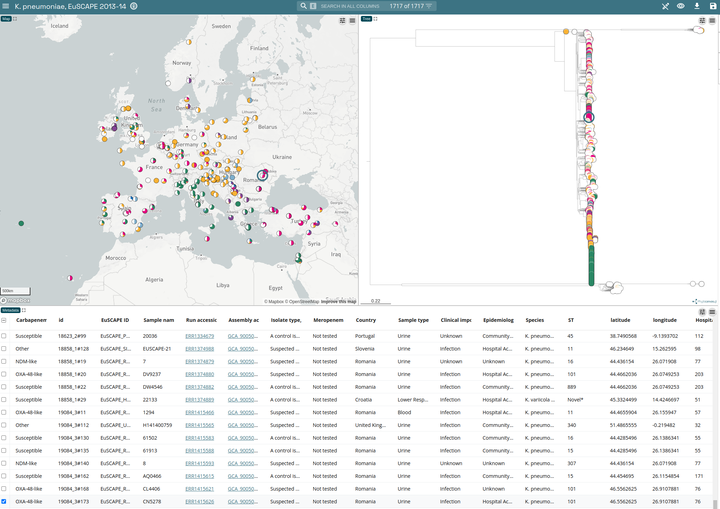

Strategies for Modernizing Public Health Genomic Data Approaches
Kelsey Florek, PhD, MPH Senior Genomics and Data Scientist Wisconsin State Laboratory of Hygiene June 5, 2024
Slides live at:
www.k-florek.net/talks
www.k-florek.net/talks
Public Health Application of
Infectious Disease Genomics
- Pathogen Surveillance
- trends
- prioritization and risk assessment
- early warning system
- Outbreak Response
- source tracking
- containment
- risk assessment
Application of Genomic Data to Outbreaks

Application of Genomic Data to Surveillance
Pathogen Surveillance: SARS-CoV-2
SARS-CoV-2 Wastewater
SARS-CoV-2 Clinical
Advancing Genomics in the Cloud
What is the cloud?

Cloud Data Strategies
Genomic Data Lake

Anatomy of a Bioinformatics Workflow

include { SAMPLESHEET_CHECK } from '../../modules/local/samplesheet_check'
workflow INPUT_CHECK {
take:
samplesheet // file: /path/to/samplesheet.csv
main:
SAMPLESHEET_CHECK ( samplesheet )
.csv
.splitCsv ( header:true, sep:',' )
.map { create_fasta_channel(it) }
.set { reads }
emit:
// channel: [ val(meta), [ path_to_reads ] ]
reads
// channel: [ samplesheet.valid.csv ]
csv = SAMPLESHEET_CHECK.out.csv
// channel: [ versions.yml ]
versions = SAMPLESHEET_CHECK.out.versions
}
// Function to get list of [ meta, [ fasta ] ]
def create_fasta_channel(LinkedHashMap row) {
// create meta map
def meta = [:]
meta.id = row.sample
def fasta_meta = []
if (!file(row.fasta).exists()) {
exit 1
} else {
fasta_meta = [ meta, [ file(row.fasta) ] ]
}
return fasta_meta
}
Genomic Data Cloud Infrastructure
Monitoring Data Workflows with Nextflow Tower
Monitoring Data Workflows with Nextflow Tower
WSLH Data Portal Infrastructure
AWS Glue and MapReduce
- Map: input data is first split into smaller blocks, then each block is assigned to a separate worker node and processed in parallel
- Shuffle: worker nodes redistribute data such that all data belonging to a group located on the same worker node
- Reduce: if needed worker nodes then process each group of output data, in parallel
AWS Glue and MapReduce
Query Data in the Data Lake
 dataportal.slh.wisc.edu
dataportal.slh.wisc.eduNext Steps in Genomic Data Integration
